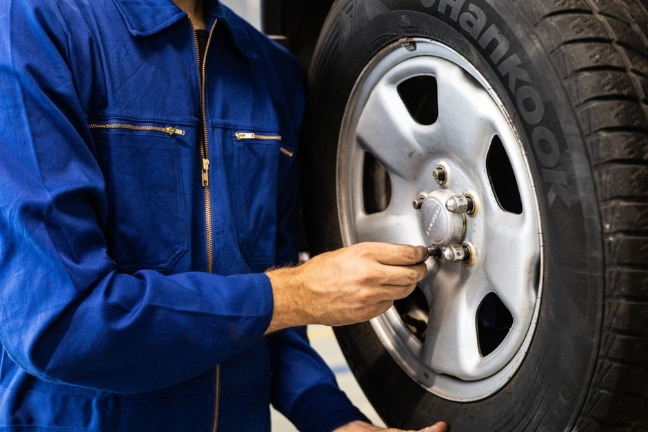

Pasos para inspeccionar y mantener los neumáticos para seguridad máxima

Photo: Artem Podrez / Pexels
Los neumáticos son lo único que une tu coche con el suelo. Revisarlos unos minutos al mes mejora la seguridad y ahorra dinero. Esta guía explica qué puedes comprobar tú mismo; el resto es trabajo de un profesional.
1. Comprueba la presión en frío
Mide la presión al menos una vez al mes y antes de un viaje largo, con los neumáticos fríos, antes de rodar o tras pocos minutos de marcha. El valor correcto está en la etiqueta de la puerta del conductor o en el manual del vehículo. No uses la cifra escrita en el costado del neumático: es la presión máxima. Una presión baja aumenta el desgaste y el consumo.
2. Mira el estado de la banda de rodadura
Un medidor de profundidad es barato y fácil de usar. El mínimo legal suele ser 1,6 mm, pero conviene cambiar antes, sobre todo para la lluvia y la nieve. Consulta la normativa de tu zona. Un desgaste desigual puede indicar mala presión o un problema de alineación.
3. Busca daños visibles
Revisa los costados y la banda de rodadura: cortes, grietas, bultos o clavos incrustados. Un bulto en el costado es peligroso: no sigas conduciendo y pide ayuda profesional.
4. Rota los neumáticos
La rotación reparte el desgaste. La frecuencia y el patrón dependen del vehículo y están en el manual; muchos talleres la hacen en el cambio de aceite.
5. Revisa también el neumático de repuesto
Comprueba su presión y que tengas el gato y la llave de ruedas. Los kits de reparación y los repuestos compactos son soluciones temporales.
Señales de que debes ir al taller
- el coche tira hacia un lado o el volante vibra;
- desgaste muy desigual entre los neumáticos;
- pérdida de presión repetida en el mismo neumático.
Para el equilibrado, la alineación y la sustitución, acude a un profesional. Una revisión periódica en el taller completa tus comprobaciones mensuales.